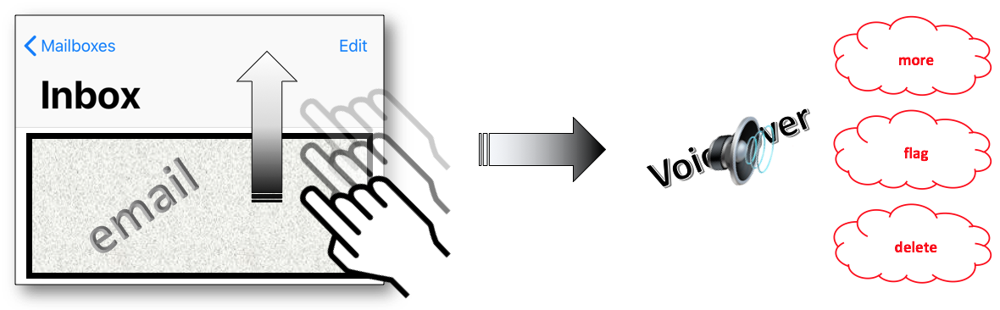
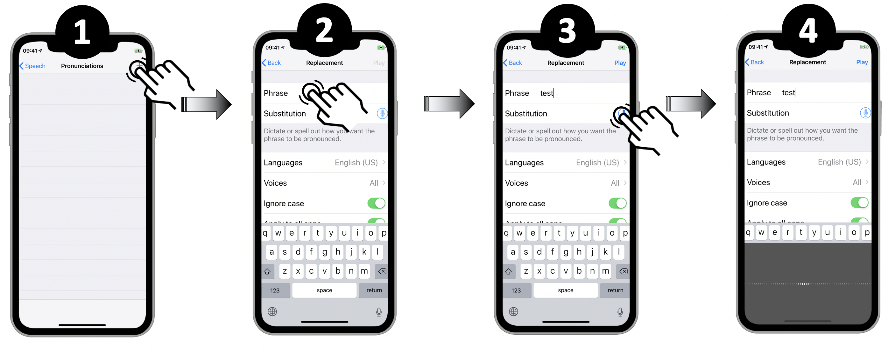

iOS developer guide
This guide aims to present the various iOS SDK accessibility options.
Through different categories, it explains how to use the accessibility attributes / methods and provides links to the Apple official documentation.
Code snippets are also available to show the different possible implementations { (Swift 5.0, Objective C) + (Xcode 10, iOS 12) }.
Element trait
- (void)customTraits() {
//Specified UIPageControl with the ’ajustable’ trait.
pageControl.accessibilityTraits = UIAccessibilityTraitAdjustable;
//Added header.
defaultHeaderViewCell.accessibilityTraits = UIAccessibilityTraitHeader;
}
func customTraits() {
//Specified UIPageControl with the ’ajustable’ trait.
pageControl.accessibilityTraits = .adjustable
//Added header.
defaultHeaderViewCell.accessibilityTraits = .header
}
- (void)changeTraits {
//Dedicated trait set with no other option.
onePageButton.accessibilityTraits = UIAccessibilityTraitButton | UIAccessibilityTraitLink;
//Added traits to the existing ones.
pageControl.accessibilityTraits |= UIAccessibilityTraitHeader; //Only one trait.
pageControl.accessibilityTraits |= UIAccessibilityTraitButton + UIAccessibilityTraitLink; //Many traits.
//Remove a trait.
onePageButton.accessibilityTraits &= ~UIAccessibilityTraitLink;
//Check out the bitmask trait existence.
if ((pageControl.accessibilityTraits & UIAccessibilityTraitHeader) != 0) {
// Do the job if '.header' is one of the traits...
}
}
func changeTraits() {
//Dedicated trait set with no other option.
onePageButton.accessibilityTraits = [.button, .link]
//Added traits to the existing ones.
pageControl.accessibilityTraits.insert(.header) //Only one trait.
pageControl.accessibilityTraits.formUnion([.button, .link]) //Many traits.
//Remove a trait.
onePageButton.accessibilityTraits.remove(.link)
//Check out the bitmask trait existence.
if (pageControl.accessibilityTraits.rawValue & UIAccessibilityTraits.header.rawValue == UIAccessibilityTraits.header.rawValue) {
// Do the job if '.header' is one of the traits...
}
}
Text alternatives
These accessibility attributes are available via the builder interface but also programmatically. Anything inheriting from UIView has these attributes by default. These attributes accept an optional string, and are therefore easily localizable.
@interface ChangeTextView() {
__weak IBOutlet UILabel * myLabel;
__weak IBOutlet UIProgressView * myProgressView;
}
@end
@implementation ChangeTextView
(void)viewDidAppear:(BOOL)animated {
[super viewDidAppear:animated];
myLabel.accessibilityLabel = @"hello";
myLabel.accessibilityHint = @"This is an added comment.";
myProgressView.accessibilityValue = @"45 per cent";
}
@end
class ChangeTextView: UIViewController {
@IBOutlet weak var myLabel: UILabel!
@IBOutlet weak var myProgressView: UIProgressView!
override func viewDidAppear(_ animated: Bool) {
super.viewDidAppear(animated)
myLabel.accessibilityLabel = "hello"
myLabel.accessibilityHint = "This is an added comment."
myProgressView.accessibilityValue = "45 per cent"
}
}
Date, time and numbers
 Incoming data must be formatted to obtain a natural and understandable descriptive vocalization.
Incoming data must be formatted to obtain a natural and understandable descriptive vocalization.

NSDateFormatter * dateFormatter = [[NSDateFormatter alloc]init];
[dateFormatter setDateFormat:@"dd/MM/yyyy HH:mm"];
NSDate * date = [dateFormatter dateFromString:@"01/04/2015 05:30"];
dateLabel.text = [NSDateFormatter localizedStringFromDate:date
dateStyle:NSDateFormatterShortStyle
timeStyle:NSDateFormatterNoStyle];
dateLabel.accessibilityLabel = [NSDateFormatter localizedStringFromDate:date
dateStyle:NSDateFormatterMediumStyle
timeStyle:NSDateFormatterNoStyle];
hourLabel.text = [NSDateFormatter localizedStringFromDate:date
dateStyle:NSDateFormatterNoStyle
timeStyle:NSDateFormatterShortStyle];
NSDateComponents * hourComponents = [[NSCalendar currentCalendar] components:NSCalendarUnitHour | NSCalendarUnitMinute
fromDate:date];
hourLabel.accessibilityLabel = [NSDateComponentsFormatter localizedStringFromDateComponents:hourComponents
unitsStyle:NSDateComponentsFormatterUnitsStyleSpellOut];
let dateFormatter = DateFormatter()
dateFormatter.dateFormat = "dd/MM/yyyy HH:mm"
let date = dateFormatter.date(from: "01/04/2015 05:30")
dateLabel.text = DateFormatter.localizedString(from: date!,
dateStyle: .short,
timeStyle: .none)
dateLabel.accessibilityLabel = DateFormatter.localizedString(from: date!,
dateStyle: .medium,
timeStyle: .none)
hourLabel.text = DateFormatter.localizedString(from: date!,
dateStyle: .none,
timeStyle: .short)
let hourComponents = Calendar.current.dateComponents([.hour, .minute],
from: date!)
hourLabel.accessibilityLabel = DateComponentsFormatter.localizedString(from: hourComponents,
unitsStyle: .spellOut)
 As the previous sheet dealing with date and time, the incoming data must be formatted to be analyzed and vocalized according to the proper value of the explained number.
As the previous sheet dealing with date and time, the incoming data must be formatted to be analyzed and vocalized according to the proper value of the explained number.

NSNumber * numberValue = @54038921.7;
NSNumberFormatter * numberFormatter = [[NSNumberFormatter alloc]init];
numberFormatter.numberStyle = NSNumberFormatterDecimalStyle;
numberLabel.text = [numberFormatter stringFromNumber:numberValue];
numberLabel.accessibilityLabel = [NSNumberFormatter localizedStringFromNumber:numberValue
numberStyle:NSNumberFormatterSpellOutStyle];
let numberValue = NSNumber(value: 54038921.7)
numberLabel.text = NumberFormatter.localizedString(from: numberValue,
number: .decimal)
numberLabel.accessibilityLabel = NumberFormatter.localizedString(from: numberValue,
number: .spellOut)
 The idea of this format is based on a comma separation of each pair of figures that will provide the vocal punctuation.
The idea of this format is based on a comma separation of each pair of figures that will provide the vocal punctuation.

NSString * phoneNumberValue = @"06.11.22.33.06";
NSArray * phoneNumberElts = [phoneNumberValue componentsSeparatedByString:@"."];
NSNumberFormatter * nbFormatter = [[NSNumberFormatter alloc]init];
nbFormatter.numberStyle = NSNumberFormatterSpellOutStyle;
NSMutableString * spelledOutString = [[NSMutableString alloc]init];
[phoneNumberElts enumerateObjectsUsingBlock:^(id _Nonnull obj,
NSUInteger idx,
BOOL * _Nonnull stop) {
NSString * elt = (NSString *)obj;
if (idx != 0) {
[spelledOutString appendString:@","];
}
if ([elt hasPrefix:@"0"]) {
NSString * firstFigure = [nbFormatter stringFromNumber:@([[elt substringToIndex:1] integerValue])];
NSString * secondFigure = [nbFormatter stringFromNumber:@([[elt substringFromIndex:1] integerValue])];
[spelledOutString appendString:firstFigure];
[spelledOutString appendString:secondFigure];
} else {
[spelledOutString appendString:[nbFormatter stringFromNumber:@([elt integerValue])]];
}
}];
phoneNumberLabel.text = phoneNumberValue;
phoneNumberLabel.accessibilityLabel = spelledOutString;
let phoneNumberValue = "06.11.22.33.06"
let phoneNumberElts = phoneNumberValue.components(separatedBy: ".")
let nbFormatter = NumberFormatter()
nbFormatter.numberStyle = .spellOut
var spelledOutString = String()
for (index, elt) in phoneNumberElts.enumerated() {
if (index != 0) {
spelledOutString.append(",")
}
if (elt.hasPrefix("0")) {
let firstFigureValue = Int(String(elt[elt.startIndex]))!
let firstFigure = nbFormatter.string(from: NSNumber(value:firstFigureValue))
spelledOutString.append(firstFigure!)
let secondFigureValue = Int(String(elt[elt.index(elt.startIndex, offsetBy: 1)]))!
let secondFigure = nbFormatter.string(from: NSNumber(value:secondFigureValue))
spelledOutString.append(secondFigure!)
} else {
let figure = nbFormatter.string(from: NSNumber(value:Int(elt)!))
spelledOutString.append(figure!)
}
}
phoneNumberLabel.text = phoneNumberValue
phoneNumberLabel.accessibilityLabel = spelledOutString
Trigger a vocalization
UIAccessibilityPostNotification(UIAccessibilityAnnouncementNotification,
@"This is a VoiceOver message.");
UIAccessibility.post(notification: .announcement,
argument: "This is a VoiceOver message.")
Change the vocalization language
- (IBAction)tapHere:(UIButton *)sender {
myLabel.accessibilityLanguage = @"fr";
myLabel.accessibilityLabel = @"Ceci est un nouveau label. Merci.";
UIAccessibilityPostNotification(UIAccessibilityLayoutChangedNotification, myLabel);
}
@IBAction func tapHere(_ sender: UIButton) {
myLabel.accessibilityLanguage = "fr"
myLabel.accessibilityLabel = "Ceci est un nouveau label. Merci."
UIAccessibility.post(notification: UIAccessibility.Notification.layoutChanged,
argument: myLabel)
}
Notify a content change
//The element 'myLabel' is focused and vocalized with its new value.
- (IBAction)tapHere:(UIButton *)sender {
myLabel.accessibilityLabel = @"This is a new label.";
UIAccessibilityPostNotification(UIAccessibilityLayoutChangedNotification, myLabel);
}
//The first accessible element in the page is focused and vocalized with a sound like announcing a new page.
(IBAction)clic:(UIButton *)sender {
UIAccessibilityPostNotification(UIAccessibilityScreenChangedNotification, nil);
}
//The element 'myLabel' is focused and vocalized with its new value.
@IBAction func tapHere(_ sender: UIButton) {
myLabel.accessibilityLabel = "This is a new label."
UIAccessibility.post(notification: UIAccessibility.Notification.layoutChanged,
argument: myLabel)
}
//The first accessible element in the page is focused and vocalized with a sound like announcing a new page.
@IBAction func clic(_ sender: UIButton) {
UIAccessibility.post(notification: UIAccessibility.Notification.screenChanged,
argument: nil)
}
Hide elements
The accessibilityElement attribute is available via the interface builder but can also be used directly through the code.
The other two attributes are available only through the code.

- (void)viewDidAppear:(BOOL)animated {
[super viewDidAppear:animated];
//Creation of an element inside which 2 other children elements will be inserted.
CGRect redParentViewRect = CGRectMake(100.0, 100.0, 40.0, 40.0);
UIView * myRedParentView = [[UIView alloc]initWithFrame:redParentViewRect];
myRedParentView.backgroundColor = [UIColor redColor];
[self.view addSubview:myRedParentView];
//The target element musn't be accessible so as to be considered as a container to its children elements.
//If this attribute is 'YES', the target element will be the only one accessible element.
myRedParentView.isAccessibilityElement = NO;
//The elements contained in the target element won't be accessible even if they're defined as such.
//If this attribute is 'NO' and the previous one is 'NO', only the children elements will be accessible.
myRedParentView.accessibilityElementsHidden = NO;
[self createViewWithColor:[UIColor yellowColor]
inside:myRedParentView];
[self createViewWithColor:[UIColor blueColor]
inside:myRedParentView];
}
(void)createViewWithColor:(UIColor*)color
inside:(UIView*)parentView {
float delta = (color == [UIColor yellowColor]) ? 0.0 : 20.0;
CGRect rect = CGRectMake(10.0 + delta, 10.0 + delta, 10.0, 10.0);
UIView * theView = [[UIView alloc]initWithFrame:rect];
theView.backgroundColor = color;
[parentView addSubview:theView];
theView.isAccessibilityElement = YES;
}
override func viewDidAppear(_ animated: Bool) {
super.viewDidAppear(animated)
//Creation of an element inside which 2 other children elements will be inserted.
let redParentViewRect = CGRect.init(x: 100.0,
y: 100.0,
width: 40.0,
height: 40.0)
let myParentView = UIView.init(frame: parentViewRect)
myRedParentView.backgroundColor = .red
self.view.addSubview(myRedParentView)
//The target element musn't be accessible so as to be considered as a container to its children elements.
//If this attribute is 'true', the target element will be the only one accessible element.
myRedParentView.isAccessibilityElement = true
//The elements contained in the target element won't be accessible even if they're defined as such.
//If this attribute is 'false' and the previous one is 'false', only the children elements will be accessible.
myRedParentView.accessibilityElementsHidden = false
self.createViewWithColor(.yellow, inside: myRedParentView)
self.createViewWithColor(.blue, inside: myRedParentView)
}
func createViewWithColor(_ color:UIColor, inside parentView:UIView) {
let delta:CGFloat = ((color == .yellow) ? 0.0 : 20.0)
let rect = CGRect.init(x: 10.0 + delta,
y: 10.0 + delta,
width: 10.0,
height: 10.0)
let theView = UIView.init(frame: rect)
theView.backgroundColor = color
parentView.addSubview(theView)
theView.isAccessibilityElement = true
}
Grouping elements
 Create your wrapper as an accessible element :
Create your wrapper as an accessible element :
#import "MyViewController.h"
#import "MyWrapView.h"
@interface MyViewController ()
@property (weak, nonatomic) IBOutlet UILabel * myLabel;
@property (weak, nonatomic) IBOutlet UISwitch * mySwitch;
@end
@implementation MyViewController
(void)viewDidAppear:(BOOL)animated {
[super viewDidAppear:animated];
//Create the view that will encapsulate the 'label' and the 'Switch Control'.
MyWrapView * wrap = [[MyWrapView alloc] initWith:_myLabel
and:_mySwitch];
[self.view addSubview:wrap];
}
@end
class MyViewController: UIViewController {
@IBOutlet weak var myLabel: UILabel!
@IBOutlet weak var mySwitch: UISwitch!
override func viewDidAppear(_ animated: Bool) {
super.viewDidAppear(animated)
//Create the view that will encapsulate the 'label' and the 'Switch Control'.
let wrap = MyWrapView.init(with: myLabel,
and: mySwitch)
self.view.addSubview(wrap)
}
}
... and implement the wrapper class to define accurately the action when a double tap occurs :
@implementation MyWrapView
//Indexes for the array containing all the wrapped elements.
int indexLabel = 0;
int indexSwitch = 1;
- (instancetype)initWith:(UILabel *)label and:(UISwitch *)aSwitch {
CGRect viewFrame = CGRectUnion(label.frame, aSwitch.frame);
MyWrapView * wrapView = [[MyWrapView alloc]initWithFrame:viewFrame];
wrapView.accessibilityElements = @[label, aSwitch];
NSString * switchValue = (aSwitch.isOn) ? @"on" : @"off";
wrapView.isAccessibilityElement = YES;
wrapView.accessibilityLabel = [NSString stringWithFormat:@"the switch control is %@", switchValue.description];
wrapView.accessibilityHint = @"tap twice to change the switch control status.";
return wrapView;
}
//Function called by the system when a double tap occurs on the selected wrapper.
- (BOOL)accessibilityActivate {
UISwitch * theSwitch = self.accessibilityElements[indexSwitch];
[theSwitch setOn:!(theSwitch.isOn)];
NSString * switchValue = (theSwitch.isOn) ? @"on" : @"off";
self.accessibilityLabel = [NSString stringWithFormat:@"the switch control is %@", switchValue.description];
return YES;
}
@end
class MyWrapView: UIView {
//Indexes for the array containing all the wrapped elements.
let indexLabel = 0
let indexSwitch = 1
override init(frame: CGRect) {
super.init(frame: frame)
}
required init?(coder aDecoder: NSCoder) {
super.init(coder: aDecoder)
}
convenience init(with label: UILabel,and aSwitch: UISwitch) {
let viewFrame = label.frame.union(aSwitch.frame)
self.init(frame: viewFrame)
self.accessibilityElements = [label, aSwitch]
let switchValue = (aSwitch.isOn) ? "on" : "off"
self.isAccessibilityElement = true
self.accessibilityLabel = "the switch control is " + switchValue.description
self.accessibilityHint = "tap twice to change the switch control status."
}
//Function called by the system when a double tap occurs on the selected wrapper.
override func accessibilityActivate() -> Bool {
let theSwitch = self.accessibilityElements?[indexSwitch] as? UISwitch
theSwitch?.setOn(!((theSwitch?.isOn)!), animated: false)
let switchValue = (theSwitch?.isOn)! ? "on" : "off"
self.accessibilityLabel = "the switch control is " + switchValue.description
return true
}
}
@interface ActivationPointViewController ()
@property (weak, nonatomic) IBOutlet UIButton * myButton;
@property (weak, nonatomic) IBOutlet UILabel * myLabel;
@property (weak, nonatomic) IBOutlet UISwitch * mySwitch;
@end
@implementation ActivationPointViewController
UIAccessibilityElement * elt;
(void)viewDidAppear:(BOOL)animated {
[super viewDidAppear:animated];
[_mySwitch addTarget:self
action:@selector(configChanged:)
forControlEvents:UIControlEventValueChanged];
elt = [[UIAccessibilityElement alloc]initWithAccessibilityContainer:self.view];
CGRect a11yFirstEltFrame = CGRectUnion(_myLabel.frame, _myButton.frame);
CGRect a11yEltFrame = CGRectUnion(a11yFirstEltFrame, _mySwitch.frame);
elt.accessibilityLabel = @"regrouping elements";
elt.accessibilityHint = @"double tap to change the switch control status";
elt.accessibilityFrameInContainerSpace = a11yEltFrame;
elt.accessibilityActivationPoint = [_mySwitch center];
self.view.accessibilityElements = @[elt];
}
(void)configChanged:(UISwitch *)sender {
NSString * switchValue = _mySwitch.on ? @"on" : @"off";
elt.accessibilityLabel = [NSString stringWithFormat:@"the switch control is %@", switchValue.description];
}
@end
class ActivationPointViewController: UIViewController {
@IBOutlet weak var myButton: UIButton!
@IBOutlet weak var myLabel: UILabel!
@IBOutlet weak var mySwitch: UISwitch!
var elt: UIAccessibilityElement?
override func viewDidAppear(_ animated: Bool) {
super.viewDidAppear(animated)
mySwitch.addTarget(self,
action: #selector(configChanged),
for: .valueChanged)
elt = UIAccessibilityElement(accessibilityContainer: self.view!)
let a11yEltFrame = (myLabel.frame.union(myButton.frame)).union(mySwitch.frame)
if let elt = elt {
elt.accessibilityLabel = "regrouping elements"
elt.accessibilityHint = "double tap to change the switch control status"
elt.accessibilityFrameInContainerSpace = a11yEltFrame
elt.accessibilityActivationPoint = mySwitch.center
self.view.accessibilityElements = [elt]
}
}
@objc func configChanged(sender: UISwitch){
if let configGroup = elt {
let switchValue = (mySwitch?.isOn)! ? "on" : "off"
configGroup.accessibilityLabel = "the switch control is " + switchValue.description
}
}
}
Another grouping elements case could use the shouldGroupAccessibilityChildren attribute which is a Boolean that indicates whether VoiceOver must group its children views. This allows making unique vocalizations or define a particular reading order for a part of the page (see Reading order section for further information).
Reading order

__weak IBOutlet UIView * blueBlock;
__weak IBOutlet UIView * greyColumn;
(void)viewDidAppear:(BOOL)animated {
[super viewDidAppear:animated];
//Reads the first three numbers in the grey column.
greyColumn.shouldGroupAccessibilityChildren = YES;
//Reads 6, 8, 9 and 5 in this order inside the blue block.
blueBlock.isAccessibilityElement = NO;
blueBlock.accessibilityElements = @[key_6,
key_8,
key_9,
key_5];
}
@IBOutlet weak var greyColumn: UIView!
@IBOutlet weak var blueBlock: UIView!
override func viewDidAppear(_ animated: Bool) {
super.viewDidAppear(animated)
//Reads the first three numbers in the grey column.
greyColumn.shouldGroupAccessibilityChildren = true
//Reads 6, 8, 9 and 5 in this order inside the blue block.
blueBlock.isAccessibilityElement = false
blueBlock.accessibilityElements = [key_6!,
key_8!,
key_9!,
key_5!]
}
Focus an element
Overriden inside a view controller, these elements will be helpless if you think they will be called when an accessible element is focused. However, if they are implemented in the accessible element itself, you won't be disappointed. This mistake is due to the informal aspect of the protocol that allows an override of its methods inside an inherited NSObject element even if it's not accessible... like a view controller for instance.
#import "UIView+focus.h"
@implementation UIView (focus)
(void)accessibilityElementDidBecomeFocused {
if ([self accessibilityElementIsFocused]) {
NSLog(@"My element has become focused.");
}
}
(void)accessibilityElementDidLoseFocus {
if ([self accessibilityElementIsFocused]) {
NSLog(@"My element has lost focus.");
}
}
(BOOL)accessibilityElementIsFocused {
if ([self.accessibilityIdentifier isEqualToString:@"myAccessibleElt"]) {
return YES;
} else {
return NO;
}
}
@end
extension UIView {
override open func accessibilityElementDidBecomeFocused() {
if self.accessibilityElementIsFocused() {
print("My element has become focused.")
}
}
override open func accessibilityElementDidLoseFocus() {
if self.accessibilityElementIsFocused() {
print("My element has lost focus.")
}
}
override open func accessibilityElementIsFocused() -> Bool {
if (self.accessibilityIdentifier == "myAccessibleElt") {
return true
} else {
return false
}
}
}
Modify the focus area of VoiceOver
 By keeping this default value, one might unwillingly activate the element in the middle of the frame only by activating the created regroupment.
By keeping this default value, one might unwillingly activate the element in the middle of the frame only by activating the created regroupment.

float xVal;
float yVal;
float widthVal;
float heightVal;
(void)viewDidAppear:(BOOL)animated {
[super viewDidAppear:animated];
xVal = myLabel.accessibilityFrame.origin.x;
yVal = myLabel.accessibilityFrame.origin.y;
widthVal = myLabel.accessibilityFrame.size.width;
heightVal = myLabel.accessibilityFrame.size.height;
}
//First way to enlarge the focus area.
(IBAction)tapHere:(UIButton *)sender {
myLabel.accessibilityFrame = CGRectMake(xVal,
yVal,
widthVal + 100.0,
heightVal+ 100.0);
UIAccessibilityPostNotification(UIAccessibilityLayoutChangedNotification, myLabel);
}
//Second way to enlarge the focus area (Bezier).
(IBAction)clic:(UIButton *)sender {
UIBezierPath * bezierPath = [UIBezierPath bezierPath];
[bezierPath moveToPoint:CGPointMake(xVal, yVal)];
[bezierPath addLineToPoint:CGPointMake(xVal + widthVal + 100.0,
yVal)];
[bezierPath addLineToPoint:CGPointMake(xVal + widthVal + 100.0,
yVal + heightVal+ 100.0)];
[bezierPath addLineToPoint:CGPointMake(xVal,
yVal + heightVal+ 100.0)];
[bezierPath closePath];
myLabel.accessibilityPath = bezierPath;
UIAccessibilityPostNotification(UIAccessibilityLayoutChangedNotification, myLabel);
}
var xVal: CGFloat = 0.0
var yVal: CGFloat = 0.0
var widthVal: CGFloat = 0.0
var heightVal: CGFloat = 0.0
override func viewDidAppear(_ animated: Bool) {
super.viewDidAppear(animated)
xVal = myLabel.accessibilityFrame.origin.x;
yVal = myLabel.accessibilityFrame.origin.y;
widthVal = myLabel.accessibilityFrame.size.width;
heightVal = myLabel.accessibilityFrame.size.height;
}
//First way to enlarge the focus area.
@IBAction func clicHere(_ sender: UIButton) {
myLabel.accessibilityFrame = CGRect.init(x: xVal,
y: yVal,
width: widthVal + 100.0,
height: heightVal + 100.0)
UIAccessibility.post(notification: UIAccessibility.Notification.layoutChanged,
argument: myLabel)
}
//Second way to enlarge the focus area (Bezier).
@IBAction func clic(_ sender: UIButton) {
let bezierPath = UIBezierPath.init()
bezierPath.move(to: CGPoint.init(x: xVal, y: yVal))
bezierPath.addLine(to: CGPoint.init(x: xVal + widthVal + 100.0,
y: yVal))
bezierPath.addLine(to: CGPoint.init(x: xVal + widthVal + 100.0,
y: yVal + heightVal + 100.0))
bezierPath.addLine(to: CGPoint.init(x: xVal,
y: yVal + heightVal + 100.0))
bezierPath.close()
myLabel.accessibilityPath = bezierPath
UIAccessibility.post(notification: UIAccessibility.Notification.screenChanged,
argument: myLabel)
}
Text size
 The following steps should be respected in order to easily use this API :
- **Use the text styles** available with the application iOS version.
The following steps should be respected in order to easily use this API :
- **Use the text styles** available with the application iOS version.
 - Choose the system font to facilitate your programing even if the use of other fonts is well assisted by the `UIFontMetrics` new class (iOS11).
- Choose the system font to facilitate your programing even if the use of other fonts is well assisted by the `UIFontMetrics` new class (iOS11).
__weak IBOutlet UILabel * fontHeadline;
__weak IBOutlet UILabel * fontFootNote;
//Use of the default native font.
fontFootNote.font = [UIFont preferredFontForTextStyle:UIFontTextStyleHeadline];
//Customed font definition for a header.
UIFont * fontHead = [UIFont fontWithName:@"Chalkduster" size:30.0];
UIFontMetrics * fontHeadMetrics = [[UIFontMetrics alloc]initForTextStyle:UIFontTextStyleHeadline];
fontHeadline.font = [fontHeadMetrics scaledFontForFont:fontHead];
@IBOutlet weak var fontHeadline: UILabel!
@IBOutlet weak var fontFootNote: UILabel!
//Use of the default native font for a header.
fontFootNote.font = .preferredFont(forTextStyle: .headline)
//Customed font definition for a header.
let fontHead = UIFont(name: "Chalkduster", size: 30.0)
let fontHeadMetrics = UIFontMetrics(forTextStyle: .headline)
fontHeadline.font = fontHeadMetrics.scaledFont(for: fontHead!)
Listen to the font size settings change event UIContentSizeCategoryDidChange or directly use the property adjustsFontForContentSizeCategory to have an automatic update of your system font size if you're programming in iOS10 (this attribute applies to custom fonts only with the
UIFontMetricsclass). Note that the traitCollectionDidChange method that belongs to theUITraitEnvironmentinformal protocol may also be used in this context because it will be called as soon as the iOS interface environment changes (class/content size, portrait/landscape).//Listens to the notification dealing with the font size changing from the mobile settings. [[NSNotificationCenter defaultCenter] addObserver:self selector:@selector(methodToBeCalled:) name:UIContentSizeCategoryDidChangeNotification object:nil]; //Automatic changing of the font size without listening to the previous notification. fontHeadline.adjustsFontForContentSizeCategory = YES; - (void)methodToBeCalled:(NSNotification *)notification { //When handling the font size change event, you must redisplay the affected elements. fontFootNote.font = [UIFont preferredFontForTextStyle:UIFontTextStyleFootnote]; }//Listens to the notification dealing with the font size changing from the mobile settings. NotificationCenter.default.addObserver(self,
selector:#selector(methodToBeCalled(notification:)), name: UIContentSizeCategory.didChangeNotification, object: nil)//Automatic changing of the font size without listening to the previous notification. fontHeadline.adjustsFontForContentSizeCategory = true
@objc func methodToBeCalled(notification: Notification) {
//When handling the font size change event, you must redisplay the affected elements. fontFootNote.font = UIFont.preferredFont(forTextStyle: .footnote)}
Be careful that the containers fit their contents: using constraints is the best way to perform this task using dynamic values.
Don't forget to adapt the color contrast to the text size.
Truncation hyphen
 The rationale behind is the use of a `NSMutableAttributedString` with a `NSMutableParagraphStyle` type property as exposed hereunder:
The rationale behind is the use of a `NSMutableAttributedString` with a `NSMutableParagraphStyle` type property as exposed hereunder:
@interface TruncationHyphen () {
__weak IBOutlet UILabel * myLabel;
}
@end
@implementation TruncationHyphen
- (void)viewDidLoad {
[super viewDidLoad];
NSString * myString = @"floccinaucinihilipilification";
NSMutableParagraphStyle * paraph = [[NSMutableParagraphStyle alloc] init];
paraph.alignment = NSTextAlignmentJustified;
paraph.hyphenationFactor = 1.0;
UIFont * myFont = [UIFont fontWithName:@"HoeflerText-Black" size:18.0];
UIFont * myTextFont = [[UIFontMetrics metricsForTextStyle:UIFontTextStyleTitle1] scaledFontForFont:myFont];
NSDictionary * attributesDictionary = @{NSFontAttributeName:myTextFont};
NSMutableAttributedString * myText = [[NSMutableAttributedString alloc]initWithString:myString
attributes:attributesDictionary];
[myText addAttribute:NSParagraphStyleAttributeName
value:paraph
range:NSMakeRange(0, 1)];
myLabel.attributedText = myText;
}
@end
class TruncationHyphen: UIViewController {
@IBOutlet weak var myLabel: UILabel!
override func viewDidLoad() {
super.viewDidLoad()
let myString = "floccinaucinihilipilification"
let paraph = NSMutableParagraphStyle()
paraph.alignment = .justified
paraph.hyphenationFactor = 1.0
let myTextFont = UIFontMetrics(forTextStyle: .title1).scaledFont(for:UIFont(name:"HoeflerText-Black", size:18)!)
let myText = NSMutableAttributedString(string:myString,
attributes: [.font: myTextFont])
myText.addAttribute(.paragraphStyle,
value: paraph,
range: NSMakeRange(0,1))
myLabel.attributedText = myText
}
}
Graphical elements size
 3. If a storyboard is used for this image, tick `Adjusts Image Size` in the Image View section, otherwise put the `adjustsImageSizeForAccessibilityContentSizeCategory` image property to `true` in code :
3. If a storyboard is used for this image, tick `Adjusts Image Size` in the Image View section, otherwise put the `adjustsImageSizeForAccessibilityContentSizeCategory` image property to `true` in code :
 4. If a **tab bar** or a **tool bar** is used in the application, first repeat the previous 3 steps for each image included in the items to be enlarged in the middle of the screen and then link the image to its appropriate item :
4. If a **tab bar** or a **tool bar** is used in the application, first repeat the previous 3 steps for each image included in the items to be enlarged in the middle of the screen and then link the image to its appropriate item :
 **WARNING : don't forget to check out your layout with these new images larger sizes.**
An application with a tab bar, whose second bar item displays the Orange logo (added `Aspect Fit` content mode and constraints to stretch the image view), is created to test the features exposed in the description.
With the `Larger Accessibility Sizes` activation in the settings (see the previous section), one can easily note in the application :
- A larger Orange image size.
- A larger version of the bar item in an overlay if you touch and hold over it.
**WARNING : don't forget to check out your layout with these new images larger sizes.**
An application with a tab bar, whose second bar item displays the Orange logo (added `Aspect Fit` content mode and constraints to stretch the image view), is created to test the features exposed in the description.
With the `Larger Accessibility Sizes` activation in the settings (see the previous section), one can easily note in the application :
- A larger Orange image size.
- A larger version of the bar item in an overlay if you touch and hold over it.

Continuous adjustable values
 It's hard to render what's happening when the changing isn't graphically or vocally notified.
It's hard to render what's happening when the changing isn't graphically or vocally notified.
 The focus must change to :
- Get each element that increases or decreases the value.
- Know the value provided by the `label`.
The focus must change to :
- Get each element that increases or decreases the value.
- Know the value provided by the `label`.
Moreover, there is no real time notification dealing with the value changing.
Nothing is definitely blocking in use but these latest remarks lead to a new design for this example that used to be so simple.
The rationale behind is to be able to change the stepper value, to be informed of this modification and to know the new value thanks to a single and unique object.
Group the stepperand the label (a StackView should do the job) then put UIAccessibilityTraitAdjustable as a new trait for this new accessible group.
This trait is MANDATORY linked to the accessibilityIncrement() and accessibilityDecrement() methods that must be implemented to define the continous way of changing the value.
As a result, all the previous constraints are removed and a hint is natively provided by this trait to mention the proper way of using this object.

- To get this result, the container class {
stepper+label} is first created to allow the delegation for the future value changing.
-===== StepperWrapper.h =====-
NS_ASSUME_NONNULL_BEGIN
@class StepperWrapper;
@protocol AdjustableForAccessibilityDelegate <NSObject>
- (void)adjustableDecrementForView:(StepperWrapper *)view;
- (void)adjustableIncrementForView:(StepperWrapper *)view;
@end
@interface StepperWrapper : UIStackView
@property(nonatomic,weak) id <AdjustableForAccessibilityDelegate> delegate;
@end
NS_ASSUME_NONNULL_END
-===== StepperWrapper.m =====-
NS_ASSUME_NONNULL_BEGIN
@implementation StepperWrapper
- (instancetype)initWithCoder:(NSCoder *)coder {
self = [super initWithCoder:coder];
self.isAccessibilityElement = YES;
self.accessibilityTraits = UIAccessibilityTraitAdjustable;
return self;
}
- (void)accessibilityDecrement {
if ([_delegate respondsToSelector:@selector(adjustableDecrementForView:)]) {
[_delegate adjustableDecrementForView:self];
}
}
- (void)accessibilityIncrement {
if ([_delegate respondsToSelector:@selector(adjustableIncrementForView:)]) {
[_delegate adjustableIncrementForView:self];
}
}
protocol AdjustableForAccessibilityDelegate: class {
func adjustableDecrementFor(_ view: StepperWrapper)
func adjustableIncrementFor(_ view: StepperWrapper)
}
class StepperWrapper: UIStackView {
weak var delegate: AdjustableForAccessibilityDelegate?
override init(frame: CGRect) {
super.init(frame: frame)
}
required init(coder: NSCoder) {
super.init(coder: coder)
isAccessibilityElement = true
accessibilityTraits = .adjustable
}
override func accessibilityDecrement() {
delegate?.adjustableDecrementFor(self)
}
override func accessibilityIncrement() {
delegate?.adjustableIncrementFor(self)
}
}
- Next, the two methods of the implemented protocol must be defined before updating and vocally presenting the new value in the ViewController.
NS_ASSUME_NONNULL_BEGIN
@interface ContinuousAdjustableValues () <AdjustableForAccessibilityDelegate>
@property (weak, nonatomic) IBOutlet StepperWrapper * stepperStackViewAccess;
@property (weak, nonatomic) IBOutlet UIStepper * stepperAccess;
@property (weak, nonatomic) IBOutlet UILabel * stepperValueAccess;
@end
@implementation ContinuousAdjustableValues
- (void)viewWillAppear:(BOOL)animated {
[super viewWillAppear:animated];
_stepperStackViewAccess.delegate = self;
_stepperStackViewAccess.accessibilityLabel = @"increase or decrease the value";
_stepperStackViewAccess.accessibilityValue = _stepperValueAccess.text;
}
- (void)adjustableDecrementForView:(StepperWrapper *)view {
_stepperAccess.value -= _stepperAccess.stepValue;
[self updateStepperValue];
}
- (void)adjustableIncrementForView:(StepperWrapper *)view {
_stepperAccess.value += _stepperAccess.stepValue;
[self updateStepperValue];
}
- (void) updateStepperValue {
_stepperValueAccess.text = [NSString stringWithFormat:@"Value = %0.1f",_stepperAccess.value];
_stepperStackViewAccess.accessibilityValue = _stepperValueAccess.text;
}
@end
NS_ASSUME_NONNULL_END
class ContinuousAdjustableValues: UIViewController, AdjustableForAccessibilityDelegate {
@IBOutlet weak var stepperStackViewAccess: StepperWrapper!
@IBOutlet weak var stepperAccess: UIStepper!
@IBOutlet weak var stepperValueAccess: UILabel!
override func viewDidLoad() {
super.viewDidLoad()
stepperStackViewAccess.delegate = self
stepperStackViewAccess.accessibilityLabel = "increase or decrease the value"
stepperStackViewAccess.accessibilityValue = stepperValueAccess.text
}
func adjustableDecrementFor(_ view: StepperWrapper) {
stepperAccess.value -= stepperAccess.stepValue
updateStepperValue()
}
func adjustableIncrementFor(_ view: StepperWrapper) {
stepperAccess.value += stepperAccess.stepValue
updateStepperValue()
}
private func updateStepperValue() {
stepperValueAccess.text = "Value = \(stepperAccess.value)"
stepperStackViewAccess.accessibilityValue = stepperValueAccess.text
}
}
Custom actions
 This gesture cannot lead to the proper result with VoiceOver because a flick left will give rise to the selection of the previous accessible element instead of suggesting actions as above.
This gesture cannot lead to the proper result with VoiceOver because a flick left will give rise to the selection of the previous accessible element instead of suggesting actions as above.

@interface CustomActions ()
@property (weak, nonatomic) IBOutlet UILabel * persoElt;
@end
@implementation CustomActions
- (void)viewDidLoad {
[super viewDidLoad];
UIAccessibilityCustomAction * a11yMoreAction = [[UIAccessibilityCustomAction alloc]initWithName:@"more"
target:self
selector:@selector(moreAction)];
UIAccessibilityCustomAction * a11yFlagAction = [[UIAccessibilityCustomAction alloc]initWithName:@"flag"
target:self
selector:@selector(flagAction)];
UIAccessibilityCustomAction * a11yDeleteAction = [[UIAccessibilityCustomAction alloc]initWithName:@"delete"
target:self
selector:@selector(deleteAction)];
_persoElt.accessibilityCustomActions = @[a11yMoreAction,
a11yFlagAction,
a11yDeleteAction];
}
- (BOOL)moreAction {
//Code to be implemented for the appropriate action.
return YES;
}
- (BOOL)flagAction {
//Code to be implemented for the appropriate action.
return YES;
}
- (BOOL)deleteAction {
//Code to be implemented for the appropriate action.
return YES;
}
@end
class CustomActions: UIViewController {
@IBOutlet weak var persoElt: UILabel!
override func viewDidLoad() {
super.viewDidLoad()
let a11yMoreAction = UIAccessibilityCustomAction(name: "more",
target: self,
selector: #selector(moreAction))
let a11yFlagAction = UIAccessibilityCustomAction(name: "flag",
target: self,
selector: #selector(flagAction))
let a11yDeleteAction = UIAccessibilityCustomAction(name: "delete",
target: self,
selector: #selector(deleteAction))
persoElt.accessibilityCustomActions = [a11yMoreAction,
a11yFlagAction,
a11yDeleteAction]
}
@objc func moreAction() -> Bool {
//Code to be implemented for the appropriate action.
return true
}
@objc func flagAction() -> Bool {
//Code to be implemented for the appropriate action.
return true
}
@objc func deleteAction() -> Bool {
//Code to be implemented for the appropriate action.
return true
}
}
The code above gives rise to the following result thanks to consecutive flicks on the selected accessible element : 
Custom rotor
@interface CustomRotor ()
@property (weak, nonatomic) IBOutlet UILabel * rotorTitle;
@property (weak, nonatomic) IBOutlet UILabel * upLabel;
@property (weak, nonatomic) IBOutlet UILabel * downLabel;
@end
@implementation CustomRotor
static NSInteger flicksUp;
static NSInteger flicksDown;
(void)initialize {
flicksUp = 0;
flicksDown = 0;
}
(void)viewDidLoad {
[super viewDidLoad];
UIAccessibilityCustomRotor * rotor = [self buildMyRotor:@"Rotor info"];
self.accessibilityCustomRotors = @[rotor];
}
(UIAccessibilityCustomRotor *)buildMyRotor:(NSString * _Nonnull)name{
return [[UIAccessibilityCustomRotor alloc]initWithName:name
itemSearchBlock:^UIAccessibilityCustomRotorItemResult * _Nullable(UIAccessibilityCustomRotorSearchPredicate * _Nonnull predicate) {
if (predicate.searchDirection == UIAccessibilityCustomRotorDirectionNext) {
flicksDown += 1;
self.downLabel.text = [NSString stringWithFormat:@"%ld",(long)flicksDown];
} else {
flicksUp += 1;
self.upLabel.text = [NSString stringWithFormat:@"%ld",(long)flicksUp];
}
return [[UIAccessibilityCustomRotorItemResult alloc] initWithTargetElement:self.rotorTitle
targetRange:nil];
}];
}
@end
class CustomRotor: UIViewController {
@IBOutlet weak var rotorTitle: UILabel!
static var flicksUp = 0
@IBOutlet weak var upLabel: UILabel!
static var flicksDown = 0
@IBOutlet weak var downLabel: UILabel!
override func viewDidLoad() {
super.viewDidLoad()
let rotor = buildMyRotor("Rotor info")
self.accessibilityCustomRotors = [rotor]
}
func buildMyRotor(_ name: String) -> UIAccessibilityCustomRotor {
return UIAccessibilityCustomRotor.init(name: name,
itemSearch: { predicate -> UIAccessibilityCustomRotorItemResult? in
if (predicate.searchDirection == UIAccessibilityCustomRotor.Direction.next) {
CustomRotor.flicksDown += 1
self.downLabel.text = String(CustomRotor.flicksDown)
} else {
CustomRotor.flicksUp += 1
self.upLabel.text = String(CustomRotor.flicksUp)
}
return UIAccessibilityCustomRotorItemResult.init(targetElement:self.rotorTitle,
targetRange: nil)
})
}
}
The code above gives rise to the following illustrated steps :
 The use of a custom rotor is definitely not a natural part of a mobile application, that's why its functioning and purpose must be fully explained to assist the user experience.
The main difference between a rotor option and a custom action or an adjustable element relies on the fact that it can be activated whatever the selected element.
However, if the selected element is adjustable or holds any custom actions, its actions will prevail over those of the rotor.
Such a feature must be implemented with caution and according to specific needs whose only purpose should be to improve and facilitate the user experience.
The use of a custom rotor is definitely not a natural part of a mobile application, that's why its functioning and purpose must be fully explained to assist the user experience.
The main difference between a rotor option and a custom action or an adjustable element relies on the fact that it can be activated whatever the selected element.
However, if the selected element is adjustable or holds any custom actions, its actions will prevail over those of the rotor.
Such a feature must be implemented with caution and according to specific needs whose only purpose should be to improve and facilitate the user experience.
Accessibility options
BOOL isVoiveOverRunning = (UIAccessibilityIsVoiceOverRunning() ? 1 : 0);
BOOL isSwitchControlRunning = (UIAccessibilityIsSwitchControlRunning() ? 1 : 0);
NSLog(@"VoiceOver is %d and SwitchControl is %d.", isVoiveOverRunning, isSwitchControlRunning);
let isVoiceOverRunning = (UIAccessibility.isVoiceOverRunning ? 1 : 0)
let isSwitchControlRunning = (UIAccessibility.isSwitchControlRunning ? 1 : 0)
print("VoiceOver is \(isVoiceOverRunning) and SwichControl is \(isSwitchControlRunning).")
In this example, a method is fired when VoiceOver or Switch Control status has changed.
- (void)viewDidAppear:(BOOL)animated {
[super viewDidAppear:animated];
[[NSNotificationCenter defaultCenter] addObserver:self
selector:@selector(methodToBeCalled:)
name:UIAccessibilitySwitchControlStatusDidChangeNotification
object:nil];
[[NSNotificationCenter defaultCenter] addObserver:self
selector:@selector(methodToBeCalled:)
name:UIAccessibilityVoiceOverStatusDidChangeNotification
object:nil];
}
- (void)methodToBeCalled:(NSNotification *)notification {
NSArray * checkStatus = @[@"NOK", @"OK"];
NSLog(@"SWITCH CONTROL is %@ and VOICE OVER is %@",
checkStatus[UIAccessibilityIsSwitchControlRunning()],
checkStatus[UIAccessibilityIsVoiceOverRunning()]);
}
override func viewDidAppear(_ animated: Bool) {
super.viewDidAppear(animated)
NotificationCenter.default.addObserver(self,
selector: #selector(methodToBeCalled(notification:)),
name: UIAccessibility.switchControlStatusDidChangeNotification,
object: nil)
NotificationCenter.default.addObserver(self,
selector: #selector(methodToBeCalled(notification:)),
name: UIAccessibility.voiceOverStatusDidChangeNotification,
object: nil)
}
@objc private func methodToBeCalled(notification: Notification) {
let switchControlStatus = (UIAccessibility.isSwitchControlRunning ? "OK" : "NOK")
let voiceOverStatus = (UIAccessibility.isVoiceOverRunning ? "OK" : "NOK")
print("SWITCH CONTROL is \(switchControlStatus) and VOICE OVER is \(voiceOverStatus).")
}
Navigation bar

- LeftBarItem : usually includes only a single element to get back to the previous screen.
- Title : often presented as a simple text that may be build with StackViews in the most complex use cases.
- RightBarItem : area that might contains many different icons (account, authentication, validation...).
Using the standard components with few navigation bar customizations is a good way to give rise to the best VoiceOver result with minimal effort. Unfortunately, some project constraints may prevent such a practice: specific examples are then provided hereunder so as to ease some delicate implementations that might include the reading order of items comprising even those of the navigation bar.
 **Using UIView is recommended** when new elements are created in the right part of the navigation bar so as to ease some VoiceOver future implementations.
**Using UIView is recommended** when new elements are created in the right part of the navigation bar so as to ease some VoiceOver future implementations.
UIBarButtonItem * _a11yRightBarButton;
UILabel * a11y = [[UILabel alloc]init];
a11y.text = @"OK";
[a11y sizeToFit];
[a11y setUserInteractionEnabled:YES]; //Mandatory to use the 'tap gesture'.
_a11yRightBarButton = [[UIBarButtonItem alloc]initWithCustomView:a11y];
UITapGestureRecognizer * tap = [[UITapGestureRecognizer alloc]initWithTarget:self
action:@selector(validateActions:)];
[_a11yRightBarButton.customView addGestureRecognizer:tap];
_a11yRightBarButton.isAccessibilityElement = YES;
_a11yRightBarButton.accessibilityTraits = UIAccessibilityTraitButton;
_a11yRightBarButton.accessibilityLabel = @"validate your actions";
self.navigationItem.rightBarButtonItem = _a11yRightBarButton;
var a11yRightBarButton: UIBarButtonItem?
let a11y = UILabel()
a11y.text = "OK"
a11y.sizeToFit()
a11y.isUserInteractionEnabled = true //Mandatory to use the 'tap gesture'.
a11yRightBarButton = UIBarButtonItem(customView: a11y)
let tap = UITapGestureRecognizer(target: self,
action: #selector(validateActions(info:)))
a11yRightBarButton?.customView?.addGestureRecognizer(tap)
a11yRightBarButton?.isAccessibilityElement = true
a11yRightBarButton?.accessibilityTraits = .button
a11yRightBarButton?.accessibilityLabel = "validate your actions"
navigationItem.rightBarButtonItem = a11yRightBarButton
Speech synthesis
- **The text**: `AVSpeechUtterance` instance with a `voice` property that's `AVSpeechSynthesisVoice` typed.
- **The synthesizer**: `AVSpeechSynthesizer` instance that handles the incoming text with an events control thanks to the `AVSpeechSynthesizerDelegate` protocol.
- Highlighting the vocalized word thanks to the `AVSpeechSynthesizerDelegate` protocol.
- Pausing and resuming from where the speech stopped thanks to some `AVSpeechSynthesizer` instance methods.
@interface SpeechSynthesis() {
NSMutableArray * playerQueue;
AVSpeechSynthesizer * synthesizer;
__weak IBOutlet UILabel * textLabel;
}
@end
NS_ASSUME_NONNULL_BEGIN
@implementation SpeechSynthesis
- (void)viewDidLoad {
[super viewDidLoad];
playerQueue = [[NSMutableArray alloc] init];
synthesizer = [[AVSpeechSynthesizer alloc] init];
}
- (void)viewDidAppear:(BOOL)animated {
[super viewDidAppear:animated];
for (int i = 1 ; i < 11 ; i++) {
NSString * stringNbPrefix = @"Sentence number ";
NSString * stringNbSuffix = @" of the speech synthesizer.";
NSString * stringNb = [NSString stringWithFormat:@"%@%i%@", stringNbPrefix, i, stringNbSuffix];
AVSpeechUtterance * utterance = [[AVSpeechUtterance alloc] initWithString:stringNb];
utterance.rate = AVSpeechUtteranceDefaultSpeechRate;
utterance.pitchMultiplier = 1.0;
utterance.volume = 1.0;
[playerQueue addObject:utterance];
}
synthesizer.delegate = self;
for (AVSpeechUtterance * utterance in playerQueue) {
[synthesizer speakUtterance:utterance];
}
}
//AVSpeechSynthesizerDelegate protocol method to highlight the vocalized word.
- (void)speechSynthesizer:(AVSpeechSynthesizer *)synthesizer
willSpeakRangeOfSpeechString:(NSRange)characterRange
utterance:(AVSpeechUtterance *)utterance {
NSMutableAttributedString * attributedString = [[NSMutableAttributedString alloc] initWithString:utterance.speechString];
[attributedString addAttribute:NSFontAttributeName
value:[UIFont systemFontOfSize:19.0]
range:characterRange];
NSAttributedString * subString = [attributedString attributedSubstringFromRange:characterRange];
textLabel.attributedText = attributedString;
NSString * output = [NSString stringWithFormat:@"%@%@", @"word : ", subString.string];
NSLog(@"%@", output);
}
- (IBAction)pauseButton:(UIButton *)sender {
if (synthesizer.isSpeaking == TRUE) {
if ([synthesizer pauseSpeakingAtBoundary:AVSpeechBoundaryImmediate] == TRUE) {
NSLog(@"PAUSE");
} else {
NSLog(@"P.R.O.B.L.E.M. when pausing.");
}
}
}
- (IBAction)resumeButton:(UIButton *)sender {
if (synthesizer.isPaused == TRUE) {
if ([synthesizer continueSpeaking] == TRUE) {
NSLog(@"RESUME");
} else {
NSLog(@"P.R.O.B.L.E.M. when resuming.");
}
}
}
@end
class SpeechSynthesis: UIViewController, AVSpeechSynthesizerDelegate {
@IBOutlet weak var textLabel: UILabel!
var synthesizer = AVSpeechSynthesizer()
var playQueue = [AVSpeechUtterance]()
override func viewDidAppear(_ animated: Bool) {
super.viewDidAppear(animated)
for i in 1...10 {
let stringNb = "Sentence number " + String(i) + " of the speech synthesizer."
let utterance = AVSpeechUtterance(string: stringNb)
utterance.rate = AVSpeechUtteranceDefaultSpeechRate
utterance.pitchMultiplier = 1.0
utterance.volume = 1.0
playQueue.append(utterance)
}
synthesizer.delegate = self
for utterance in playQueue {
synthesizer.speak(utterance)
}
}
//AVSpeechSynthesizerDelegate protocol method to highlight the vocalized word.
func speechSynthesizer(_ synthesizer: AVSpeechSynthesizer,
willSpeakRangeOfSpeechString characterRange: NSRange,
utterance: AVSpeechUtterance) {
let attributedString = NSMutableAttributedString(string: utterance.speechString)
attributedString.addAttribute(.font,
value: UIFont.boldSystemFont(ofSize: 19),
range: characterRange)
textLabel.attributedText = attributedString
let subString = attributedString.attributedSubstring(from: characterRange)
print("word : \(subString.string)")
}
@IBAction func pauseAction(_ sender: UIButton) {
if (synthesizer.isSpeaking == true) {
if (synthesizer.pauseSpeaking(at: .immediate) == true) {
print("PAUSE")
} else {
print("P.R.O.B.L.E.M. when pausing.")
}
}
}
@IBAction func resumeAction(_ sender: UIButton) {
if (synthesizer.isPaused == true) {
if (synthesizer.continueSpeaking() == true) {
print("RESUME")
} else {
print("P.R.O.B.L.E.M. when resuming.")
}
}
}
}
NSMutableAttributedString * attrStr = [[NSMutableAttributedString alloc] initWithString:@"blablabla"
attributes:@{AVSpeechSynthesisIPANotationAttribute:@"ˈma͡ɪ.ˈa͡ɪ.ˈfʌ.ˈniz.ˈgɻe͡ɪt"}];
AVSpeechUtterance * utterance = [[AVSpeechUtterance alloc] initWithAttributedString:attrStr];
AVSpeechSynthesizer * synthesizer = [[AVSpeechSynthesizer alloc] init];
[synthesizer speakUtterance:utterance];
let pronunciationKey = NSAttributedString.Key(rawValue: AVSpeechSynthesisIPANotationAttribute)
let attrStr = NSMutableAttributedString(string: "blablabla",
attributes: [pronunciationKey: "ˈma͡ɪ.ˈa͡ɪ.ˈfʌ.ˈniz.ˈgɻe͡ɪt"])
let utterance = AVSpeechUtterance(attributedString: attrStr)
let synthesizer = AVSpeechSynthesizer()
synthesizer.speak(utterance)
Generating phonetics may be done in the device settings.
 Once the menu
Once the menu General - Accessibility - Speech - Pronunciations is reached...

- Select the '**+**' icon to add a new phonetic element.
- Name this new element in order to quickly find it later on.
- Tap the **microphone** icon.
- Vocalize an entire sentence or a single word.
- Listen to the different system proposals.
- Validate your choice with the '**OK**' button or cancel to start over.
- Tap the back button to confirm the new created phonetic element.
- Find all the generated elements in the `Pronunciations` page.
- [AVSpeechSynthesisVoice](https://developer.apple.com/documentation/avfoundation/avspeechsynthesisvoice)
- [AVSpeechSynthesizer](https://developer.apple.com/documentation/avfoundation/avspeechsynthesizer)
- [AVSpeechSynthesizerDelegate](https://developer.apple.com/documentation/avfoundation/avspeechsynthesizerdelegate)
- [AVSpeechUtterance](https://developer.apple.com/documentation/avfoundation/avspeechutterance)
All the speech synthesizer functionalities are introduced in a WWDC 2018 video that's perfectly summarized in the WWDC section of this site.
Switch Control
 The element selection using the item mode works fine when the user interface isn't too complicated and uses native elements.
However, this mode may not be helpful according to the rationale behind some specific use cases and then needs to be customized.
The element selection using the item mode works fine when the user interface isn't too complicated and uses native elements.
However, this mode may not be helpful according to the rationale behind some specific use cases and then needs to be customized.
 The following steps represent the customization :
- Creation of 2 groups {Test_1 + Test_2 ; Btn 5 + Btn 6} that must be selectable in the item mode.
- Within the other elements, only Btn 1 et Btn 2 must be separately accessible.
The following steps represent the customization :
- Creation of 2 groups {Test_1 + Test_2 ; Btn 5 + Btn 6} that must be selectable in the item mode.
- Within the other elements, only Btn 1 et Btn 2 must be separately accessible.
@interface ViewController2 ()
@property (weak, nonatomic) IBOutlet UIStackView * btnsParentView;
@property (weak, nonatomic) IBOutlet UIButton * btn1;
@property (weak, nonatomic) IBOutlet UIButton * btn2;
@property (weak, nonatomic) IBOutlet UIButton * btn5;
@property (weak, nonatomic) IBOutlet UIButton * btn6;
@end
@implementation ViewController2
- (void)viewDidAppear:(BOOL)animated {
[super viewDidAppear:animated];
//Creation of the first group 'testWrap' COMBINING the 'Test_1' and 'Test_2' buttons.
UIButton * testOneButton = [self.view viewWithTag:1];
UIButton * testTwoButton = [self.view viewWithTag:2];
CGRect testWrapFrame = CGRectUnion(testOneButton.frame, testTwoButton.frame);
UIAccessibilityElement * testWrap = [[UIAccessibilityElement alloc]initWithAccessibilityContainer:self.view];
testWrap.isAccessibilityElement = false;
testWrap.accessibilityFrame = testWrapFrame;
testWrap.accessibilityNavigationStyle = UIAccessibilityNavigationStyleCombined; //Property specific to Switch Control.
testWrap.accessibilityElements = @[testOneButton, testTwoButton];
//Creation of the 'secondGroup' SEPARATING the first two buttons.
CGRect secondGroupRect = CGRectUnion(_btn1.frame, _btn2.frame);
CGRect secondGroupFrame = [_btnsParentView convertRect:secondGroupRect
toView:self.view];
UIAccessibilityElement * secondGroup = [[UIAccessibilityElement alloc]initWithAccessibilityContainer:_btnsParentView];
secondGroup.isAccessibilityElement = false;
secondGroup.accessibilityFrame = secondGroupFrame;
secondGroup.accessibilityNavigationStyle = UIAccessibilityNavigationStyleSeparate;
secondGroup.accessibilityElements = @[_btn1, _btn2];
//Creation of the 'thirdGroup' COMBINING the last two buttons.
CGRect thirdGroupRect = CGRectUnion(_btn5.frame, _btn6.frame);
CGRect thirdGroupFrame = [_btnsParentView convertRect:thirdGroupRect
toView:self.view];
UIAccessibilityElement * thirdGroup = [[UIAccessibilityElement alloc]initWithAccessibilityContainer:_btnsParentView];
thirdGroup.isAccessibilityElement = false;
thirdGroup.accessibilityFrame = thirdGroupFrame;
thirdGroup.accessibilityNavigationStyle = UIAccessibilityNavigationStyleCombined;
thirdGroup.accessibilityElements = @[_btn5, _btn6];
self.view.accessibilityElements = @[testWrap,
secondGroup,
thirdGroup];
}
@end
class ViewController: UIViewController {
@IBOutlet weak var btnsParentView: UIStackView!
@IBOutlet weak var btn1: UIButton!
@IBOutlet weak var btn2: UIButton!
@IBOutlet weak var btn5: UIButton!
@IBOutlet weak var btn6: UIButton!
override func viewDidAppear(_ animated: Bool) {
super.viewDidAppear(animated)
//Creation of the first group 'testWrap' COMBINING the 'Test_1' and 'Test_2' buttons.
let testOneButton = self.view.viewWithTag(1) as? UIButton
let testTwoButton = self.view.viewWithTag(2) as? UIButton
let testWrapFrame = testOneButton?.frame.union((testTwoButton?.frame)!)
let testWrap = UIAccessibilityElement(accessibilityContainer: self.view!)
testWrap.isAccessibilityElement = false
testWrap.accessibilityFrame = testWrapFrame!
testWrap.accessibilityNavigationStyle = .combined //Property specific to Switch Control.
testWrap.accessibilityElements = [testOneButton!, testTwoButton!]
//Creation of the 'secondGroup' SEPARATING the first two buttons.
let secondGroupRect = btn1.frame.union(btn2.frame)
let secondGroupFrame = btnsParentView.convert(secondGroupRect,
to: self.view)
let secondGroup = UIAccessibilityElement(accessibilityContainer: btnsParentView!)
secondGroup.isAccessibilityElement = false
secondGroup.accessibilityFrame = secondGroupFrame
secondGroup.accessibilityNavigationStyle = .separate
secondGroup.accessibilityElements = [btn1!, btn2!]
//Creation of the 'thirdGroup' COMBINING the last two buttons.
let thirdGroupRect = btn5.frame.union(btn6.frame)
let thirdGroupFrame = btnsParentView.convert(thirdGroupRect,
to: self.view)
let thirdGroup = UIAccessibilityElement(accessibilityContainer: btnsParentView!)
thirdGroup.isAccessibilityElement = false
thirdGroup.accessibilityFrame = thirdGroupFrame
thirdGroup.accessibilityNavigationStyle = .combined
thirdGroup.accessibilityElements = [btn5!, btn6!]
self.view.accessibilityElements = [testWrap,
secondGroup,
thirdGroup]
}
}
The visual rendering is exposed hereunder :
 Once activated, the created groups allow to reach directly the elements which they contain.
Once activated, the created groups allow to reach directly the elements which they contain.
Vocalized application name